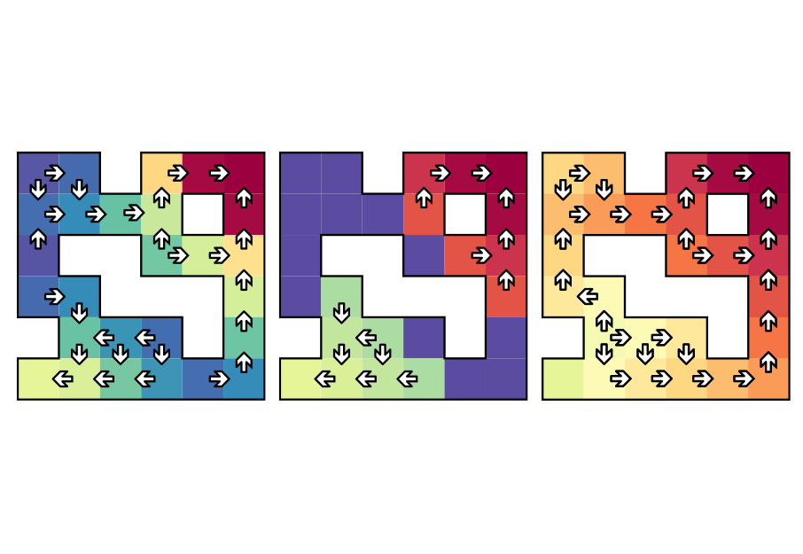
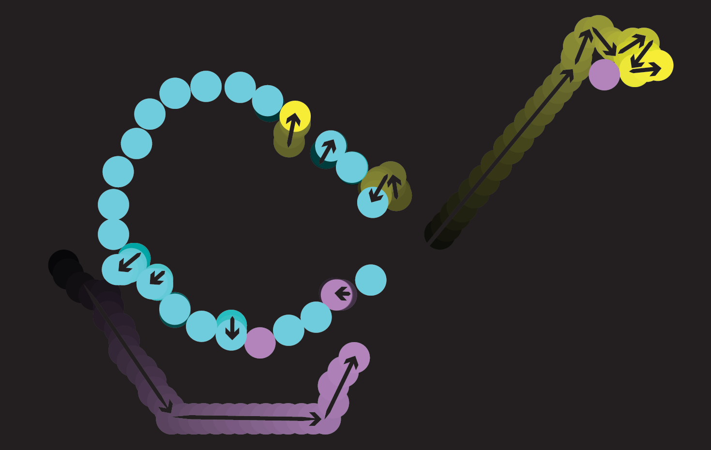

I'm a Staff Research Scientist at Riot Games in Los Angeles, CA. Before that, I was a Postdoctoral Researcher at the Max Planck Institute for Intelligent Systems with Georg Martius. I completed my PhD in Machine Learning at Imperial College London advised by Petar Kormushev, MSc in Computer Science at the University of Southern California, and MEng in Electrical Engineering at UCL with a year abroad at Georgia Tech. I have also spent time at Microsoft Research hosted by Harm van Seijen and the University of Alberta hosted by Richard S. Sutton.


Publications
-
Learning in Complex Action Spaces without Policy Gradients
TMLR (2025)
-
On the Pitfalls of Heteroscedastic Uncertainty Estimation with Probabilistic Neural Networks
ICLR 2022
-
Orchestrated Value Mapping for Reinforcement Learning
ICLR 2022
-
On Structural and Temporal Credit Assignment in Reinforcement Learning
PhD Thesis, Imperial College London (2021)
-
Learning to Represent Action Values as a Hypergraph on the Action Vertices
ICLR 2021
-
A Neural Network Oracle for Quantum Nonlocality Problems in Networks
npj Quantum Information (2020)
-
Using a Logarithmic Mapping to Enable Lower Discount Factors in Reinforcement Learning
NeurIPS 2019 (oral, top 0.5%)
-
Exploring Restart Distributions
RLDM 2019
-

Time Limits in Reinforcement Learning
ICML 2018
-
Action Branching Architectures for Deep Reinforcement Learning
AAAI 2018 (oral, top 10.9%)
-

Crowdsourced Coordination through Online Games
HRI 2016
-
Seamless Robot Simulation Integration for Education: A Case Study
Workshop on the Role of Simulation in Robot Programming, SIMPAR 2016